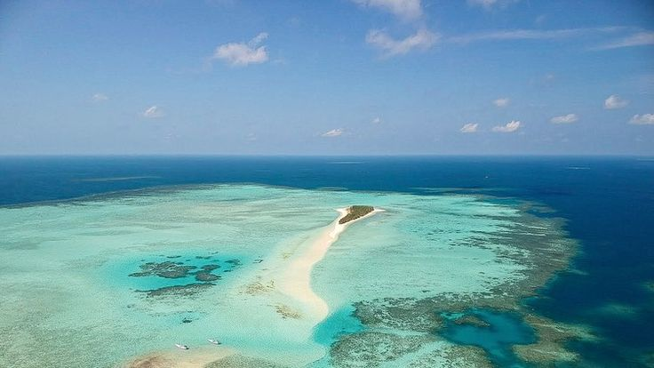
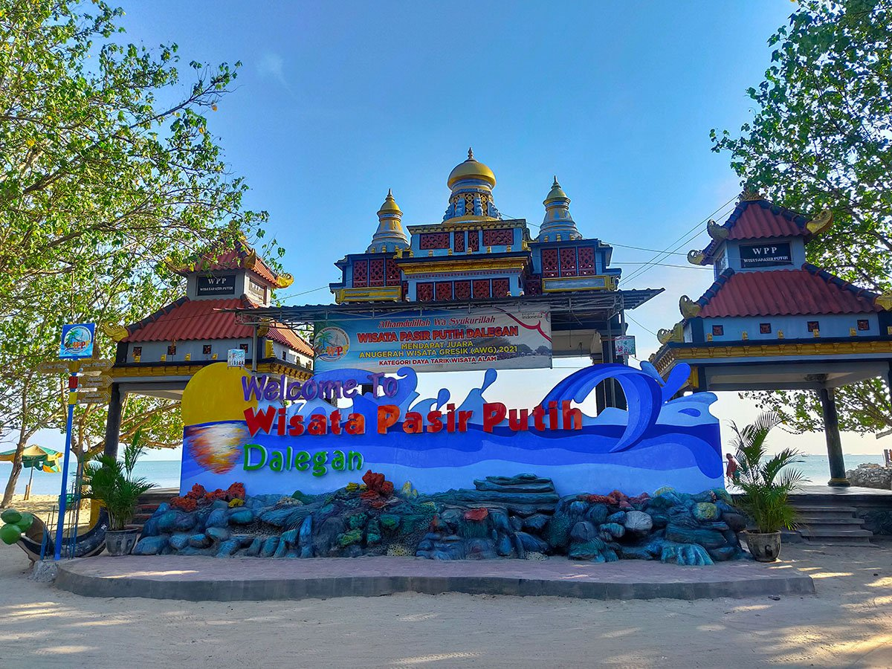

Wisata Unggulan
1. Makam Sunan Giri

Merupakan salah satu situs ziarah penting di Indonesia. Sunan Giri adalah anggota Wali Songo yang sangat berpengaruh dalam penyebaran Islam di Jawa. Terletak di puncak bukit, kawasan ini juga menyuguhkan pemandangan indah Kota Gresik dari ketinggian.
2. Makam Maulana Malik Ibrahim

Dikenal sebagai penyebar Islam pertama di Pulau Jawa, makam beliau menjadi salah satu tujuan ziarah religi terpenting. Lokasinya berada di pusat Kota Gresik, mudah dijangkau, dan ramai dikunjungi peziarah dari berbagai daerah.
3. Pulau Bawean
Terletak sekitar 120 km dari Gresik, Pulau Bawean menawarkan pesona alam laut yang indah, air terjun, danau Kastoba, serta keunikan fauna endemik seperti rusa Bawean. Pulau ini sering dijuluki "Pulau Putri" karena mayoritas penduduk laki-laki merantau, menyisakan populasi perempuan yang dominan.
4. Pantai Delegan
Pantai pasir putih yang cocok untuk liburan keluarga. Terletak di Kecamatan Panceng, Pantai Delegan menawarkan ombak tenang, fasilitas wisata lengkap, dan pemandangan matahari terbenam yang memesona.